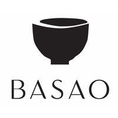
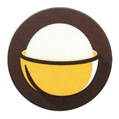
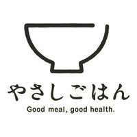

图形上重点看 BASAO，业务上重点看 OpenRice。存在共同元素，但“系统返回候选”“外观相似”和“法律上构成冲突”是不同结论。
当前项目图形
空碗口、实心碗身和底脚。用户已选稿，本轮保留。

香港 304763890 · 已注册 · 16 / 30 / 43
重点视觉参照：碗口、实心碗身和底脚相近；比例与文字不同。

香港 305487698 · 已注册 · 9 / 43
重点业务参照：登记涵盖点餐及餐厅管理 App；饭团和外圆框形成区别。

香港 305826682 · 已注册 · 29 / 30
同为有底脚的碗；线描、右侧开口及日文使整体构图不同。
名称补充：美国官方本次查 Senplate 未返回记录；作者公开资料中出现过完全同名的早期 iOS 原型，尚未证明其发行或注册状态。
阅读完整报告与证据边界 · 查看查询记录